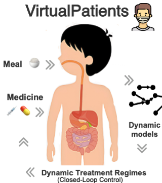

Xuehui Yu yuxuehui0302@gmail.com | | | |
About
Hello 👋 I am a final-year PhD student in the Language Technology Research Center, Faculty of Computing, Harbin Institute of Technology (HIT), co-supervised by Prof. Yi Guan and Dr. Jingchi Jiang.
I was also a visiting PhD student in the Autonomous Agents Research Group at the University of Edinburgh (UoE), supervised by Prof. Stefano V. Albrecht.
In research, I develop Reinforcement Learning (RL) algorithms for autonomous robots, with particular emphasis on out-of-distribution generalisation 🤖
My receipt is to build an end-to-end pipeline of perception and decision-making to realise general-purpose robot autonomy in the wild. I apply RL agents to real-world domains, specifically smart healthcare and smart agriculture.
News
📢 2024.9 One paper accepted by 🔥 NeurIPS 2024 🔥
📢 2024.8 I have completed my one-year visit at the Autonomous Agents Research Group, and I’ve collected many precious memories in Edinburgh. All the best to my lovely friends and colleagues 💕
📢 2024.6 I am luck to organise an academic exchange for the Agent group to major institutions in China, including Tsinghua University, Peking University, and others. For more details, please see: Twitter !! See you all there 👋
📢 2023.2 I am delighted that my work [2] [6] has been deployed in the WI Health Management System, which is now serving doctors and patients in two hospitals 🏥, as reported by WWW.CHINANEWS.COM
Education
|
|
University of Edinburgh - (2023-2024)
I was a visiting student in the Autonomous Agents Research Group at the University of Edinburgh, supervised by Prof. Stefano V. Albrecht.
|

|
Harbin Institute of Technology - (2019-)
I began my doctoral studies directly following my undergraduate degree, thanks to the postgraduate recommendation scheme. I am currently pursuing a PhD at the Faculty of Computing at Harbin Institute of Technology.
GPA: 92.53/100
|
|
|
Harbin Engineering University - (2015-2019)
I earned my bachelor’s degree in Internet of Things Engineering from the College of Computer Science and Technology, Harbin Engineering University in 2019. I was honoured the Outstanding Graduates and Outstanding Graduation Thesis in 2019.
GPA: 88.95/100.
|
Selected Publication

|
[1] Skill-aware Mutual Information Optimisation for Generalisation in Reinforcement Learning
Xuehui Yu, Mhairi Dunion, Xin Li, Stefano V Albrecht
NeurIPS 2024 (poster)
Keywords: contrastive learning, RL, meta RL, zero-shot generalisation.
✨ My favourite research ✨ How to build generalist robot autonomy in the wild? All you need might be SaMI learning objective 😉 Without any prior knowledge of skill distribution, the RL agent autonomously acquires a set of skills that are applicable across multiple tasks. These skills emerge solely from the SaMI learning objective and the data provided 🤖 🤖 🤖
Code | Paper | Our benchmark: Sa-Panda-gym
|
|
|
[2] ARLPE: A Meta Reinforcement Learning Framework for Glucose Regulation in Type 1 Diabetics
Xuehui Yu, Yi Guan, Lian Yan, Shulang Li, Xuelian Fu, Jingchi Jiang*
Expert Systems With Applications, IF: 8.665.
Keywords: Zero-shot generalisation, meta RL, active learning, healthcare agent.
How can rapid adaptation be achieved with extremely limited data in an online deployment? Employ “optimistic exploration” through active reinforcement learning!
Code | Paper
|
|
|
[3] Causal Coupled Mechanisms: A Control Method with Cooperation and Competition for Complex System
Xuehui Yu, Jingchi Jiang, Xinmiao Yu, Yi Guan*,Xue Li
The (BIBM) 2022 IEEE International Conference on Bioinformatics and Biomedicine.
Keywords: Zero-shot generalisation, causal reasoning, hierarchical RL.
Paper
|

|
[4] PercolationDF: A percolation-based medical diagnosis framework
Jingchi Jiang, Xuehui Yu, Yi Lin, Yi Guan
Mathematical Biosciences and Engineering, 2022, 19(6): 5832-5849.
Keywords: Zero-shot generalisation, knowledge representation, medical diagnosis.
The world model based on cascading theory, which models the physiological domino effect in environment dynamics.
Paper
|
|
|
[5] DECAF: An Interpretable Deep Cascading Framework for ICU Mortality Prediction
Jingchi Jiang, Xuehui Yu, Boran Wang, Linjiang Ma, Yi Guan
Artificial Intelligence in Medicine (2022): 102437.
Keywords: Zero-shot generalisation, interpretability, mortality prediction.
Paper
|

|
[6] Contextual Policy Transfer in Meta-Reinforcement Learning via Active Learning
Jingchi Jiang, Lian Yan, Xuehui Yu and Yi Guan
19th International Conference on Web Information Systems and Applications.
Paper
|

|
[7] Unified Fine-Grained Biomedical Entity Recognition as a Combination of Boundary Detection and Sequence Generation
Xue Li, Yang Yang, Mingchen Ye, Yi Guan, Xuehui Yu, and Jingchi Jiang
The (BIBM) 2022 IEEE International Conference on Bioinformatics and Biomedicine.
Paper
|
|
|
[8] An interactive food recommendation system using reinforcement learning
Liangliang Liu, Yi Guan, Zi Wang, Rujia Shen, Guowei Zheng, Xuelian Fu, Xuehui Yu, Jingchi Jiang
Expert Systems With Applications, IF: 8.665.
Keywords: food recommender systems, RL, collaborative filtering, cross attention, state representation
Paper
|
Preprints
|

|
[1] Causal Prompting Model-based Offline Reinforcement Learning
Xuehui Yu, Yi Guan, Rujia Shen, Chen Tang and Jingchi Jiang*
Keywords: RL, model-based offline RL, causal, prompt.
How to complete the online deployment of offline RL agents in low-resource scenarios? An attempt in a medical large-scale online system!
A medical benchmark VirtualPatient is being built! A decision model can be trained in either supervised learning or offline RL in the benchmark.
Paper
|
Awards & Honours
- 2023 World’s Top Universities Strategic Cooperation Fellowship Initiative;
- 2023 and 2019 Heilongjiang Province Merit Student;
- 2018 National Scholarship;
- 2018 Pacemaker to Merit Student (Only 10 selected school-wide each year);
- 2017 China Undergraduate Mathematical Contest in Modeling, National Second Prize;
- 2017 Northeast Three Provinces Mathematical Contest in Modeling, Provincial Third Prize;
- 14th 'Bochuang Cup' National College Student Embedded System Design Contest, Provincial Third Prize;
- Heilongjiang Province 5th College Students Art Performance, Vocal Music Category A, Third Prize 🎶
Additional Information
|